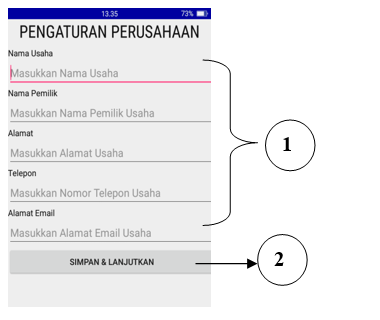
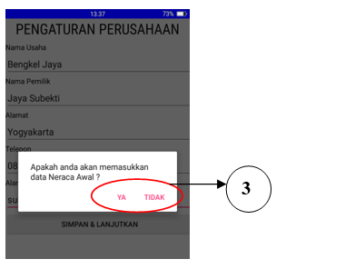
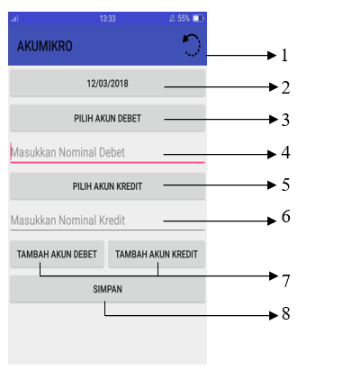
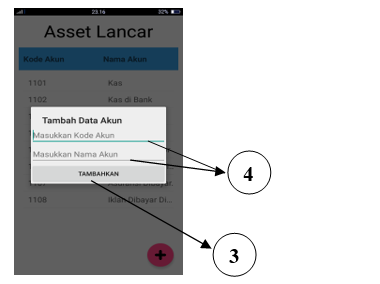
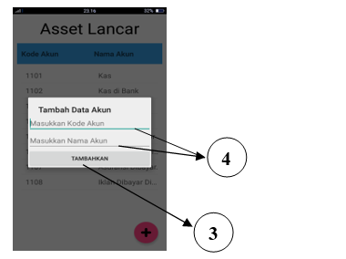

SETTING DATA AWAL


Isikan data perusahaan anda pada kolom-kolom yang telah tersedia
- Nama usaha anda
- Pemilik perusahaan
- Alamat usaha anda
- Nomor telepon
- Alamat e-mail
- Jika sudah terisi maka tekan tombol simpan dan lanjutkan
- Tekan "Ya" jika anda ingin memasukan neraca awal, tekan "Tidak" jika anda tidak ingin memasukan neraca awal.
Jika anda ingin memasukan neraca awal maka akan muncul tampilan sebagai berikut:

- Tombol restart jika terdapat kesalahan dalam memasukan data neraca awal
- Tombol untuk memilih tanggal
- Tombol untuk memilih akun debet
- Kolom untuk memasukan nominal debet
- Tombol untuk memilih akun kredit
- Kolom untuk memasukan nominal kredit
- Tombol untuk menambah akun debet dan akun kredit
- Tombol simpan, untuk meniympan data neraca awal
 
